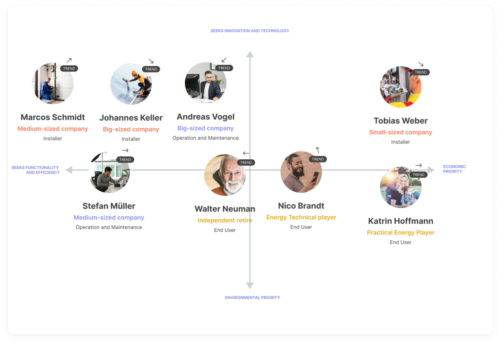
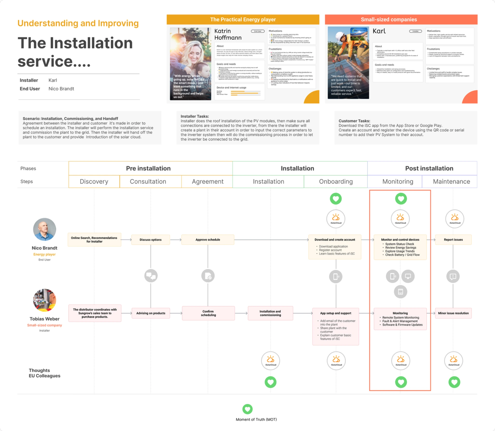
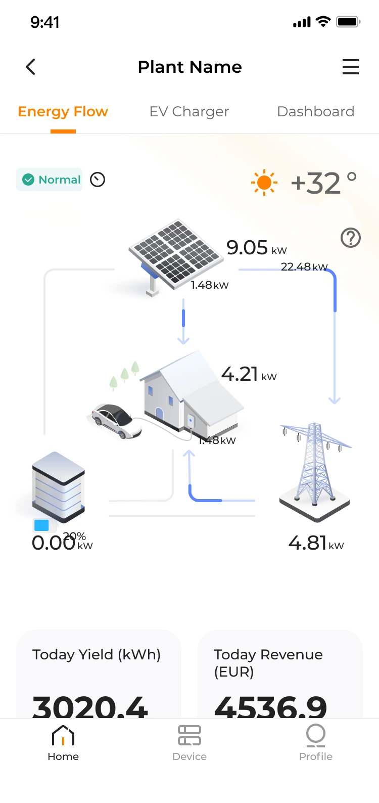
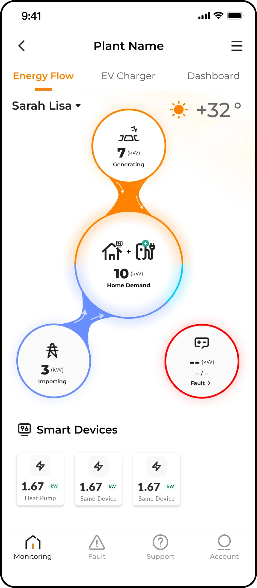
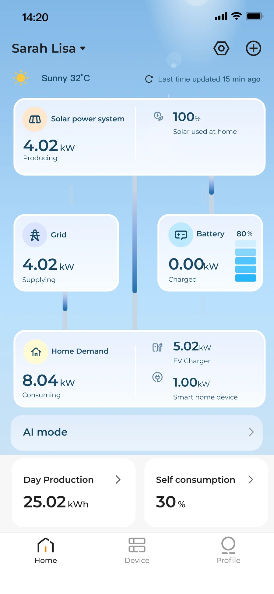

European Design Team
Product strategy · Research · Concept design
Designing the future of residential energy management
How I used market research, user insights, journey mapping and concept exploration to make a complex Energy Flow experience easier to understand for European homeowners.

Real project artifactConcept B · developed direction
Design focusHierarchy, status and progressive detail
Project snapshot
A strategic direction, not a cosmetic redesign
Competitive analysis, interviews, journeys and mid-fidelity design
Clarity, adaptability and trust
A foundation for validation and implementation
Why the project existed
Residential energy was becoming a connected ecosystem
Homeowners were no longer monitoring only solar production. Batteries, EV charging, dynamic tariffs, smart appliances and grid interaction were creating a richer—and harder to understand—experience.
01Solar
→
02Battery
→
03Home
→
04EV
→
05Grid
How might a digital product explain this complexity without making the user feel like an energy engineer?
My role
Working across research, strategy and concept design
Competitive framework and internal expert interviews
Thematic synthesis, user profiles and motivation mapping
Journey prioritisation, problem definition and principles
Concept directions, scenarios and mid-fidelity outcomes
Applied process
Finding the right problem before designing the solution
Understand the landscape
Market trends, competitor research and expert interviews.
Focus the opportunity
Behavioural profiles, motivation mapping, journeys and prioritisation.
Explore possibilities
Technical modelling, information hierarchy and two concept directions.
Create a direction
Mid-fidelity scenarios, recommendations and next steps for validation.
Learning from the market
Looking beyond interfaces to understand where the industry was heading
I analysed direct energy competitors, adjacent products and digital experiences outside the industry through four strategic lenses.
How products adapt to roles, goals and levels of expertise.
How experiences scale across mobile, tablet and desktop.
How forecasting and automation reduce manual energy management.
How products turn technical movement into an understandable story.
Key finding: the strongest homeowner products showed essential information first and treated technical depth as progressive—not compulsory.
Understanding the users
Combining internal expertise with previous European research
These were internal expert interviews rather than direct customer interviews. I combined them with previous European studies and available research from HQ.
Interview notes
→Insight cards
→Clusters
→Profiles & journeys
Working behavioural profiles
A single “residential user” did not exist
Practical Energy Player
Savings, simplicity and reassurance. Wants reliable information without becoming an energy expert.
Needs: value, clarity, confidenceIndependent Homeowner
Energy independence, long-term reliability and automated support.
Needs: autonomy, predictability, guidanceTechnical Energy Player
Control, optimisation and detailed system information.
Needs: depth, precision, advanced controlsMapping the opportunity
Finding the users the market was serving—and those it was overlooking
Competitors clustered around installers and technically engaged users. The opportunity was to better support homeowners motivated by savings, simplicity and independence.

From journey to focus
Energy Flow became the moment that shaped everyday trust
Monitoring→Energy Flow
The place where users repeatedly judge system health, performance and value.

The current experience
The interface displayed the system—but still asked casual users to interpret too much technical logic

No immediate status
Users could not quickly tell whether the system was normal, offline or in a fault state.
Data overload
Technical values competed for attention without a clear order of importance.
Misleading connections
Visual relationships did not always make actual energy movement easy to trust.
Unclear load hierarchy
Home, battery, EV and connected-device demand were difficult to distinguish.
Design direction
From technology-first to user-first
Clarity
Give users an understandable system status at a glance.
Adaptability
Offer a simple default view with deeper technical information when needed.
Trustworthiness
Represent energy movement, device connections and system states accurately.
EssentialSolar · Home · Grid · Status
→
SecondaryBattery · EV charging
→
Progressive detailSmart devices · Technical infrastructure
Concept exploration
Two directions for making complexity easier to understand

Concept A
Visual energy storytelling
Stronger colour, movement and hierarchy to make activity immediately visible.
- Strength
- Expressive and easy to scan.
- Trade-off
- Colour and motion may increase cognitive or accessibility concerns.

Concept B · Developed direction
Structured progressive disclosure
A clearer hierarchy, descriptive status language and additional detail through interaction.
- Strength
- More adaptable across different user expertise.
- Trade-off
- Less immediate visual storytelling and potentially more interaction.
Developed concept direction
A clearer, adaptive and more trustworthy Energy Flow
The developed direction translated technical system behaviour into an approachable residential experience while preserving access to deeper information.
Developed concept
A structured default view that gives users status, energy direction and the most important values before deeper technical detail.
Key improvements
Four design decisions shaped the final direction
Each decision responds directly to the research findings and makes the Energy Flow easier to understand, trust and extend.
The user first understands what is happening, then sees the numbers.
Movement is shown only when energy is actually flowing.
Detailed information remains available without dominating the default view.
Battery, EV and future smart devices have a clear place in the system.
Beyond the default view
Technical depth stays available without overwhelming the main Energy Flow screen.
- Prioritise system status and the most important live values first
- Reveal deeper component information only when the user needs it
- Keep Energy Flow focused on understanding, not data overload
Outcome & reflection
Creating direction before implementation
The project did not produce a launched feature with measurable customer outcomes. It created a research-informed direction for simplifying Energy Flow and approaching future residential experiences.
Behavioural profiles, a prioritised moment of truth, four defined UX problems, experience principles and two concept directions.
Simplification does not mean removing complexity blindly. It means deciding which complexity users need, when they need it and how it should be communicated.
Test the concepts directly with homeowners and installers, measure comprehension, assess accessibility and refine the chosen direction for development.
My role was to bring different user needs into the same product conversation and translate them into a direction that was easier to understand without losing technical credibility.